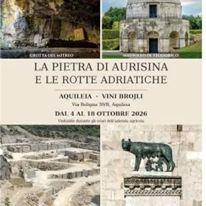

da dom 4 ott a dom 18 ott · dalle 10:00
Mostra “La pietra di Aurisina e le rotte adriatiche”
Dopo la tappa di Ravenna, il progetto DuinoBook – Tempus Edax Rerum, promosso dal Gruppo Ermada Flavio Vidonis con il sostegno della Regione Fvg e il partenariato del Comune di Aquileia, prosegue il proprio percorso ad Aquileia. Dal 4 al 18 ottobre 2026, l’azienda Vini Brojli…
 Indicazioni
Indicazioni
- Costi e prenotazioni
- Costo non indicato · Prenotazione non indicata
- Programma
- Programma da verificare. Apri la fonte ufficiale per orari e possibili aggiornamenti.
- In caso di maltempo
- Nessuna indicazione specifica pubblicata.
- Note
- Acquisito automaticamente dalla fonte.
L’EVENTO
Descrizione completa
Dopo la tappa di Ravenna, il progetto DuinoBook – Tempus Edax Rerum , promosso dal Gruppo Ermada Flavio Vidonis con il sostegno della Regione Fvg e il partenariato del Comune di Aquileia , prosegue il proprio percorso ad Aquileia.
Dal 4 al 18 ottobre 2026 , l’azienda Vini Brojli ospiterà un estratto della mostra “La pietra di Aurisina e le rotte adriatiche” , già presentata a Palazzo Rasponi, portando in una nuova sede il racconto di un materiale che unisce luoghi, epoche e culture.
L’ inaugurazione è prevista domenica 4 ottobre alle ore 12 , alla presenza dei rappresentanti del Gruppo Ermada Flavio Vidonis, dei rappresentanti istituzionali e della famiglia Clementin , proprietaria dell’azienda ospitante.
La tappa di Aquileia rinnova il legame tra il Carso e l’Adriatico attraverso la storia della pietra di Aurisina: dalle cave ai luoghi del suo impiego, dalle tecniche di estrazione e lavorazione alle testimonianze architettoniche e monumentali. La selezione espositiva mette in dialogo il territorio di origine della pietra con Aquileia e Ravenna, richiamando un patrimonio comune di storia, paesaggio e saperi.
L’apertura della mostra sarà preceduta, alle ore 10 , dal programma culturale “La Biblioteca di Brojli – Incontri tra Musica e Parole” , con il reading poetico musicale “A salutar l’estate” , nell’ambito di “Nessun giorno sia senza poesia” .
L’incontro, a cura di Francesco Zorzenone e Antonello Bifulco , riunirà amici, poeti e musicisti in una mattinata dedicata alle parole, all’ascolto e alla convivialità. Sarà inoltre disponibile un microfono aperto per chi desidera condividere letture, pensieri e racconti. Al programma parteciperà il giovane musicista Teo Macoritto , per la prima volta ospite di “Nessun giorno sia senza poesia”.
Poesia, musica e patrimonio storico si incontreranno così negli spazi di Vini Brojli, dove l’accoglienza della famiglia Clementin offrirà una cornice di scambio e partecipazione. Una collaborazione che esprime lo spirito di DuinoBook: mettere in relazione luoghi e persone, intrecciando la valorizzazione culturale con la vita delle comunità e delle realtà del territorio.
La mostra “La pietra di Aurisina e le rotte adriatiche” sarà visitabile dal 4 al 18 ottobre 2026 durante gli orari di apertura dell’azienda agricola Vini Brojli, in via Beligna ad Aquileia .
IL PROGRAMMA
Programma e orari
Appuntamenti raccolti dalle fonti elencate. Dove manca un orario, non è ancora disponibile in questa scheda.
Programma pubblicato
- Dal 2026-10-04 al 2026-10-18
INFORMAZIONI UTILI
Prima di partire
- Controllare la fonte prima di partire.
ORGANIZZAZIONE